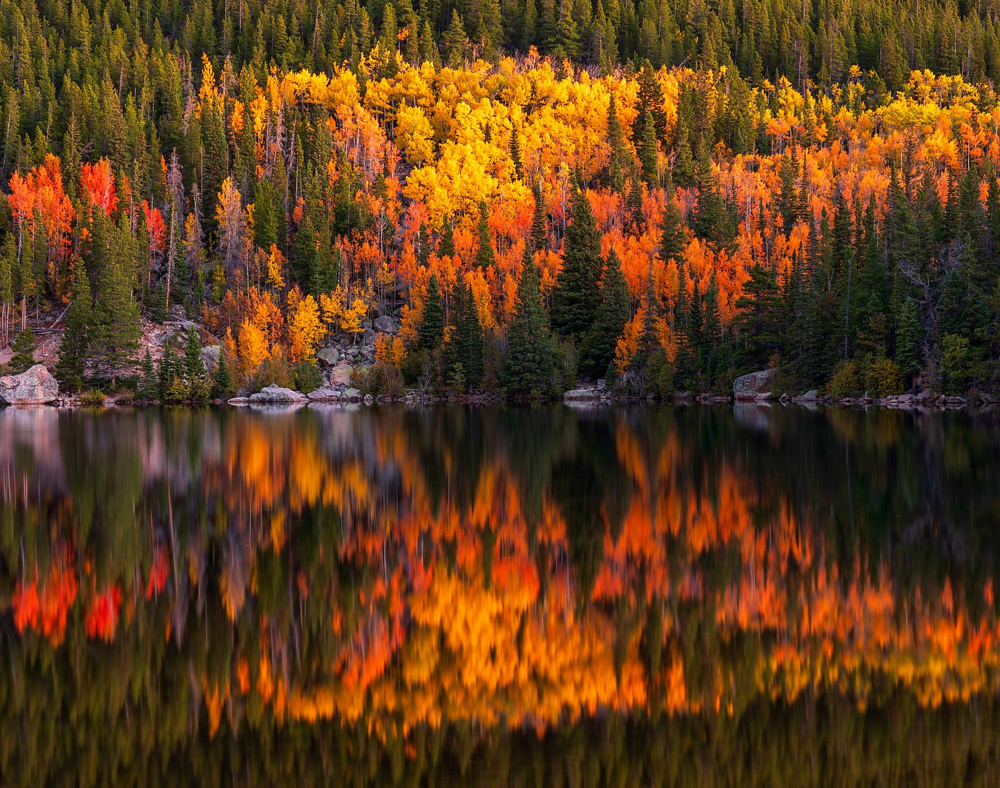
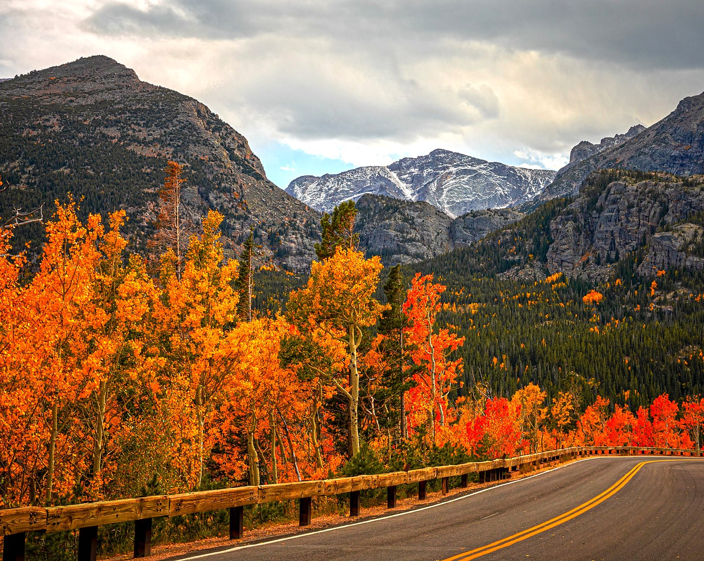

Living Rooms & Entryways
Large Colorado landscapes can create a warm focal point above sofas, fireplaces, consoles, and entry walls.
Colorado Photography Prints
Fine art Colorado landscape photography by Dan Sproul, created for homes, collectors, mountain interiors, lodge spaces, quiet luxury rooms, and hospitality environments that need warmth and place identity.
Colorado Wall Art With A Sense Of Place
Colorado is one of the strongest subjects in Dan Sproul’s landscape portfolio because it connects naturally with how people live with artwork. Aspen color, lake reflections, mountain roads, alpine light, and rugged western landscapes bring warmth and memory into a room.
This page leans into Colorado as artwork for homes and collectors first — living rooms, bedrooms, entryways, cabins, mountain homes, and quiet luxury residential spaces — while still supporting lodge, hospitality, office, and commercial interiors where regional atmosphere matters.
Dan’s Note: Colorado in autumn has a rhythm that feels different from anywhere else I photograph. The light moves fast, the aspens change by elevation, and the best images often happen in narrow windows when the mountains, color, and weather briefly line up.
Photographed Across Colorado
Many of these Colorado photographs were created during repeated trips through Rocky Mountain National Park, Bear Lake Road, Trail Ridge Road, the Maroon Bells area near Aspen, the San Juan Mountains, and Colorado’s autumn aspen corridors.
That matters because Colorado imagery can easily become generic if it is treated only as “mountain decor.” The strongest pieces carry specific light, weather, place, season, and emotional memory — the qualities that make a print feel personal in a home and elevated in a lodge or hospitality interior.
Interior Applications
Large Colorado landscapes can create a warm focal point above sofas, fireplaces, consoles, and entry walls.
Autumn aspens, alpine lakes, and rugged peaks pair naturally with wood, stone, leather, and warm neutral palettes.
Soft mountain light, reflections, and muted fall color can make residential spaces feel calm without becoming cold.
Colorado photography supports hotels, lodges, guest rooms, restaurants, and corridors with regional mountain identity.
Rocky Mountain and black-and-white landscape work can add visual strength to offices, conference rooms, and professional interiors.
Colorado prints also work as personal artwork for people with memories of Aspen, RMNP, Maroon Bells, Telluride, and mountain travel.
Colorado As A Living Memory
For Colorado pages, the landscape needs to remain the hero. Unlike a purely commercial healthcare or hospitality page, Colorado already carries strong buyer intent through place attachment, mountain travel, fall color, and personal memory.
That is why this page balances real landscape imagery with interior guidance. The mockups help visitors imagine scale, but the photographs themselves still carry the strongest emotional pull.
Colorado Artwork In Real Spaces
These Colorado photography mockups are designed to help collectors, homeowners, and designers visualize scale, atmosphere, and placement inside real interiors.
Mountain Lodge Interior
Warm stone textures, alpine mood, and dramatic fall color for fireplaces, gathering spaces, and mountain-inspired interiors.
Residential Living Room
Soft autumn tones and natural textures for residential spaces, bedrooms, and calm mountain homes.
Bedroom Interior
Reflective lake imagery and warm alpine light designed for bedrooms and restorative interiors.
Rustic Modern Interior
Vertical mountain imagery paired with natural wood, stone, and modern western residential design.
Modern Entryway
Monochrome mountain artwork for refined residential entryways and modern western interiors.
Summer Mountain Interior
Fresh green mountain scenery and open alpine views for peaceful bedroom and retreat spaces.
Quiet Luxury Residential
Large-format black and white Colorado photography designed for calm living rooms and statement interiors.
Curated Colorado Starting Points
These images should stay mostly landscape-focused. Add direct artwork links after choosing the final pieces.

Rocky Mountain National Park
Mirror-still water, fall color, and mountain atmosphere for living rooms, bedrooms, and large residential statement walls.

Aspen, Colorado
Iconic Colorado mountain light and autumn color for collectors, homes, lodges, and hospitality spaces.

Autumn Aspens
Warm fall color, mountain form, and natural movement for residential and lodge interiors.

San Juan Mountains
Rugged western mountain atmosphere for cabins, offices, lodges, and rustic luxury spaces.
Colorado Artwork FAQ
Yes. Colorado landscapes are especially strong for living rooms, bedrooms, entryways, mountain homes, cabins, and quiet luxury interiors because they combine warmth, color, place memory, and natural atmosphere.
Autumn aspens, Maroon Bells, Bear Lake, mountain lakes, alpine roads, rugged peaks, and soft sunrise or sunset light tend to work especially well in residential and lodge interiors.
Yes. Colorado prints are a natural fit for mountain lodges, boutique hospitality, guest rooms, restaurants, corridors, and resort-style interiors.
Canvas works well for warmth and mountain homes, framed fine art paper feels refined, metal enhances vivid fall color, and acrylic adds depth to luminous landscape scenes.